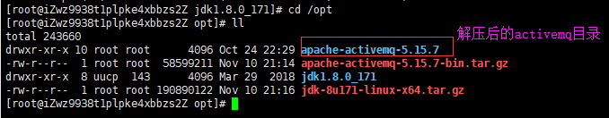
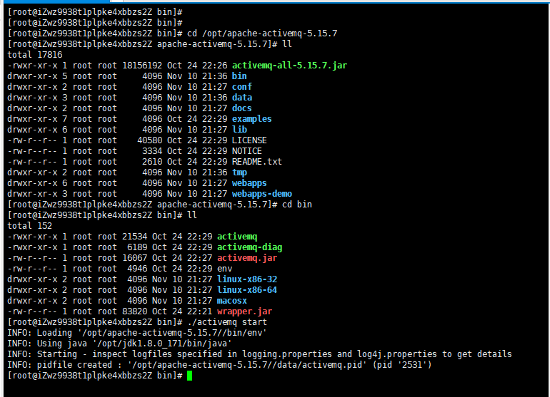
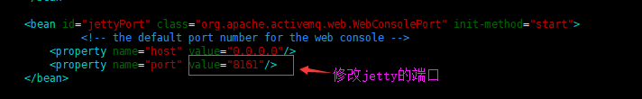
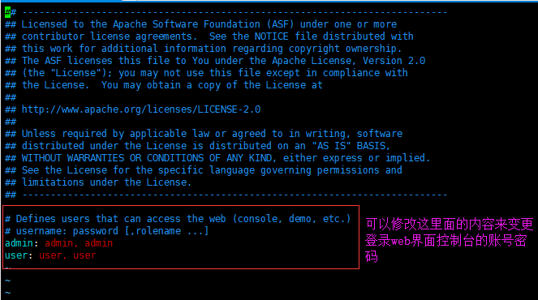
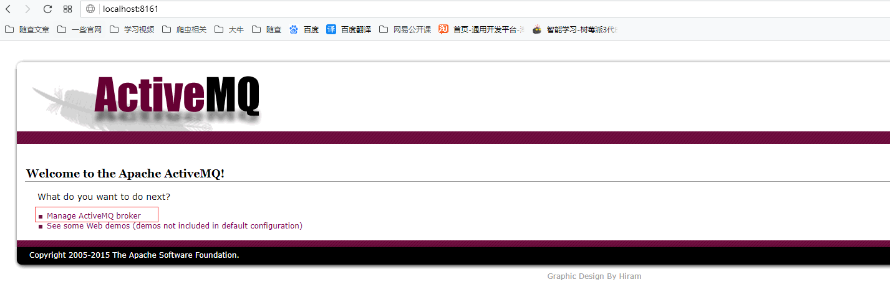
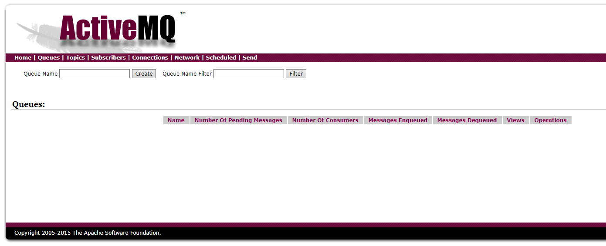

安装ActiveMQ前需要保证jdk已经安装好，activemq5.10版本以上的话需要jkd8及以上版本
下载activemq压缩包apache-activemq-5.15.7-bin.tar.gz并上传到/opt目录中，并解压缩

启动activemq服务
进入到activemq文件夹中的bin目录，运行./activemq start 命令启动activemq服务

进入activemq的web界面控制台
端口号默认为8161，可以通过activemq目录下的conf文件夹中的jetty.xml文件编辑端口号

web界面控制台的账号默认为admin，密码默认为admin，可以通过activemq目录下的conf文件夹的jetty-realm.properties文件来编辑修改

登录web界面控制台


停止activemq服务
进入到activemq文件夹中的bin目录，运行./activemq stop 命令停止activemq服务
配置文件（activemq.xml）
同时也是spring配置文件. 其中配置的是ActiveMQ应用使用的默认对象组件
transportConnectors标签 - 配置链接端口信息的. 其中的端口号61616是ActiveMQ对外发布的tcp协议访问端口. 就是java代码访问ActiveMQ时使用的端口.
配置文件（jetty.xml）
同时也是spring配置文件, 用于配置jetty服务器的默认对象组件.
ActiveMQ默认支持一个网页版的服务查看站点. 可以实现ActiveMQ中消息相关数据的页面查看.
8161端口, 是ActiveMQ网页版管理站点的默认端口.在ActiveMQ网页版管理站点中,需要登录, 默认的用户名和密码都是admin.
配置文件（users.properties）
内容信息: 用户名=密码，是用于配置客户端通过协议访问ActiveMQ时,使用的用户名和密码.